Chapter 11 Taxes and Stimulus
11.1 Compute for Equilibrium Tax
Taking advantage of snw_find_tax_rate from the PrjOptiSNW Package, this function solves for equilibrium tax rate.
11.1.1 Parameter Controls
clear all;
mp_params = snw_mp_param('default_docdense');
% mp_params = snw_mp_param('default_dense');
% mp_params = snw_mp_param('default_base');
% mp_params = snw_mp_param('default_small');
mp_params('beta') = 0.95;
xi=0.651; % Proportional reduction in income due to unemployment (xi=0 refers to 0 labor income; xi=1 refers to no drop in labor income)
b=1; % Unemployment insurance replacement rate (b=0 refers to no UI benefits; b=1 refers to 100 percent labor income replacement)
mp_params('xi') = xi;
mp_params('b') = b;
mp_controls = snw_mp_control('default_test');Parameters for COVID related Costs:
% Average check per household, given COVID actual policy payment schedule
% And given distribution. The number is from averaging over the actual
% allocations given distribution.
Covid_checks_per_capita = 18.7255856*100/62502;
% Covid_checks_per_capita = 0;
% which tax parameter to change a2 is the deafult, a0 shifts max tax rate
bl_adjust_a0 = false;
bl_load_existing = false;Graph Controls etc:
mp_controls('bl_timer') = true;
mp_controls('bl_print_vfi') = false;
mp_controls('bl_print_vfi_verbose') = false;
mp_controls('bl_print_ds') = false;
mp_controls('bl_print_ds_verbose') = false;
mp_controls('bl_print_find_tax_rate') = true;
mp_controls('bl_print_find_tax_rate_verbose') = true;11.1.2 Solve for New Tax Rate
Solve for Equilibrium Tax rate that clears government costs and income. In the extreme bounding exercise, we assume the government will pay COVID costs all in one year. This is to test whether an extreme tax scenario will lead to changes in allocation results.
Given the checks that the government hands out and the taxes imposed, individual resources post-tax are different in 2020. Households’ savings decisions in 2020 vary with taxes and checks. However, the policy function post 2020 shifts back to thte previous non-COVID world’s policy function because the COVID shock is an one period surprise shock.
a2 = snw_find_tax_rate(mp_params, mp_controls, Covid_checks_per_capita, bl_adjust_a0, bl_load_existing);
Completed SNW_VFI_MAIN_BISEC_VEC;SNW_MP_PARAM=default_docdense;SNW_MP_CONTROL=default_test;time=315.585
Completed SNW_DS_MAIN_VEC;SNW_MP_PARAM=default_docdense;SNW_MP_CONTROL=default_test;time=1056.1907
Wage quintile cutoffs=0.4645 0.71528 1.0335 1.5632
Y_inc_agg=61.7582
A_agg=119.2022
Y_inc_agg_per_capita_1=1.3486
A_per_capita=2.6031
Gov_cons_per_capita=0.23703
Covid_checks_share_of_GDP=0.022215
SNW_FIND_TAX_RATE: Aggregation, Finished Age Group:1 of 83, time-this-age:0.40805
SNW_FIND_TAX_RATE: Aggregation, Finished Age Group:2 of 83, time-this-age:0.33319
SNW_FIND_TAX_RATE: Aggregation, Finished Age Group:3 of 83, time-this-age:0.41771
SNW_FIND_TAX_RATE: Aggregation, Finished Age Group:4 of 83, time-this-age:0.34531
SNW_FIND_TAX_RATE: Aggregation, Finished Age Group:5 of 83, time-this-age:0.33489
SNW_FIND_TAX_RATE: Aggregation, Finished Age Group:6 of 83, time-this-age:0.35842
SNW_FIND_TAX_RATE: Aggregation, Finished Age Group:7 of 83, time-this-age:0.35655
SNW_FIND_TAX_RATE: Aggregation, Finished Age Group:8 of 83, time-this-age:0.35122
SNW_FIND_TAX_RATE: Aggregation, Finished Age Group:9 of 83, time-this-age:0.33076
SNW_FIND_TAX_RATE: Aggregation, Finished Age Group:10 of 83, time-this-age:0.33222
SNW_FIND_TAX_RATE: Aggregation, Finished Age Group:11 of 83, time-this-age:0.32783
SNW_FIND_TAX_RATE: Aggregation, Finished Age Group:12 of 83, time-this-age:0.32957
SNW_FIND_TAX_RATE: Aggregation, Finished Age Group:13 of 83, time-this-age:0.33172
SNW_FIND_TAX_RATE: Aggregation, Finished Age Group:14 of 83, time-this-age:0.37079
SNW_FIND_TAX_RATE: Aggregation, Finished Age Group:15 of 83, time-this-age:0.36121
SNW_FIND_TAX_RATE: Aggregation, Finished Age Group:16 of 83, time-this-age:0.34383
SNW_FIND_TAX_RATE: Aggregation, Finished Age Group:17 of 83, time-this-age:0.32866
SNW_FIND_TAX_RATE: Aggregation, Finished Age Group:18 of 83, time-this-age:0.31896
SNW_FIND_TAX_RATE: Aggregation, Finished Age Group:19 of 83, time-this-age:0.32354
SNW_FIND_TAX_RATE: Aggregation, Finished Age Group:20 of 83, time-this-age:0.35757
SNW_FIND_TAX_RATE: Aggregation, Finished Age Group:21 of 83, time-this-age:0.35162
SNW_FIND_TAX_RATE: Aggregation, Finished Age Group:22 of 83, time-this-age:0.33998
SNW_FIND_TAX_RATE: Aggregation, Finished Age Group:23 of 83, time-this-age:0.32237
SNW_FIND_TAX_RATE: Aggregation, Finished Age Group:24 of 83, time-this-age:0.32174
SNW_FIND_TAX_RATE: Aggregation, Finished Age Group:25 of 83, time-this-age:0.38317
SNW_FIND_TAX_RATE: Aggregation, Finished Age Group:26 of 83, time-this-age:0.342
SNW_FIND_TAX_RATE: Aggregation, Finished Age Group:27 of 83, time-this-age:0.32267
SNW_FIND_TAX_RATE: Aggregation, Finished Age Group:28 of 83, time-this-age:0.34224
SNW_FIND_TAX_RATE: Aggregation, Finished Age Group:29 of 83, time-this-age:0.34442
SNW_FIND_TAX_RATE: Aggregation, Finished Age Group:30 of 83, time-this-age:0.35185
SNW_FIND_TAX_RATE: Aggregation, Finished Age Group:31 of 83, time-this-age:0.32489
SNW_FIND_TAX_RATE: Aggregation, Finished Age Group:32 of 83, time-this-age:0.32887
SNW_FIND_TAX_RATE: Aggregation, Finished Age Group:33 of 83, time-this-age:0.33332
SNW_FIND_TAX_RATE: Aggregation, Finished Age Group:34 of 83, time-this-age:0.32678
SNW_FIND_TAX_RATE: Aggregation, Finished Age Group:35 of 83, time-this-age:0.37362
SNW_FIND_TAX_RATE: Aggregation, Finished Age Group:36 of 83, time-this-age:0.38589
SNW_FIND_TAX_RATE: Aggregation, Finished Age Group:37 of 83, time-this-age:0.35322
SNW_FIND_TAX_RATE: Aggregation, Finished Age Group:38 of 83, time-this-age:0.32684
SNW_FIND_TAX_RATE: Aggregation, Finished Age Group:39 of 83, time-this-age:0.34446
SNW_FIND_TAX_RATE: Aggregation, Finished Age Group:40 of 83, time-this-age:0.40304
SNW_FIND_TAX_RATE: Aggregation, Finished Age Group:41 of 83, time-this-age:0.36362
SNW_FIND_TAX_RATE: Aggregation, Finished Age Group:42 of 83, time-this-age:0.32294
SNW_FIND_TAX_RATE: Aggregation, Finished Age Group:43 of 83, time-this-age:0.34509
SNW_FIND_TAX_RATE: Aggregation, Finished Age Group:44 of 83, time-this-age:0.32763
SNW_FIND_TAX_RATE: Aggregation, Finished Age Group:45 of 83, time-this-age:0.32328
SNW_FIND_TAX_RATE: Aggregation, Finished Age Group:46 of 83, time-this-age:0.3229
SNW_FIND_TAX_RATE: Aggregation, Finished Age Group:47 of 83, time-this-age:0.32421
SNW_FIND_TAX_RATE: Aggregation, Finished Age Group:48 of 83, time-this-age:0.36399
SNW_FIND_TAX_RATE: Aggregation, Finished Age Group:49 of 83, time-this-age:0.37545
SNW_FIND_TAX_RATE: Aggregation, Finished Age Group:50 of 83, time-this-age:0.37864
SNW_FIND_TAX_RATE: Aggregation, Finished Age Group:51 of 83, time-this-age:0.3443
SNW_FIND_TAX_RATE: Aggregation, Finished Age Group:52 of 83, time-this-age:0.3398
SNW_FIND_TAX_RATE: Aggregation, Finished Age Group:53 of 83, time-this-age:0.34794
SNW_FIND_TAX_RATE: Aggregation, Finished Age Group:54 of 83, time-this-age:0.36094
SNW_FIND_TAX_RATE: Aggregation, Finished Age Group:55 of 83, time-this-age:0.34198
SNW_FIND_TAX_RATE: Aggregation, Finished Age Group:56 of 83, time-this-age:0.36405
SNW_FIND_TAX_RATE: Aggregation, Finished Age Group:57 of 83, time-this-age:0.34572
SNW_FIND_TAX_RATE: Aggregation, Finished Age Group:58 of 83, time-this-age:0.34234
SNW_FIND_TAX_RATE: Aggregation, Finished Age Group:59 of 83, time-this-age:0.34115
SNW_FIND_TAX_RATE: Aggregation, Finished Age Group:60 of 83, time-this-age:0.36025
SNW_FIND_TAX_RATE: Aggregation, Finished Age Group:61 of 83, time-this-age:0.34223
SNW_FIND_TAX_RATE: Aggregation, Finished Age Group:62 of 83, time-this-age:0.34256
SNW_FIND_TAX_RATE: Aggregation, Finished Age Group:63 of 83, time-this-age:0.34432
SNW_FIND_TAX_RATE: Aggregation, Finished Age Group:64 of 83, time-this-age:0.34369
SNW_FIND_TAX_RATE: Aggregation, Finished Age Group:65 of 83, time-this-age:0.34474
SNW_FIND_TAX_RATE: Aggregation, Finished Age Group:66 of 83, time-this-age:0.36666
SNW_FIND_TAX_RATE: Aggregation, Finished Age Group:67 of 83, time-this-age:0.34095
SNW_FIND_TAX_RATE: Aggregation, Finished Age Group:68 of 83, time-this-age:0.34424
SNW_FIND_TAX_RATE: Aggregation, Finished Age Group:69 of 83, time-this-age:0.34722
SNW_FIND_TAX_RATE: Aggregation, Finished Age Group:70 of 83, time-this-age:0.34031
SNW_FIND_TAX_RATE: Aggregation, Finished Age Group:71 of 83, time-this-age:0.35799
SNW_FIND_TAX_RATE: Aggregation, Finished Age Group:72 of 83, time-this-age:0.34436
SNW_FIND_TAX_RATE: Aggregation, Finished Age Group:73 of 83, time-this-age:0.34066
SNW_FIND_TAX_RATE: Aggregation, Finished Age Group:74 of 83, time-this-age:0.34077
SNW_FIND_TAX_RATE: Aggregation, Finished Age Group:75 of 83, time-this-age:0.34236
SNW_FIND_TAX_RATE: Aggregation, Finished Age Group:76 of 83, time-this-age:0.34346
SNW_FIND_TAX_RATE: Aggregation, Finished Age Group:77 of 83, time-this-age:0.37815
SNW_FIND_TAX_RATE: Aggregation, Finished Age Group:78 of 83, time-this-age:0.3403
SNW_FIND_TAX_RATE: Aggregation, Finished Age Group:79 of 83, time-this-age:0.34125
SNW_FIND_TAX_RATE: Aggregation, Finished Age Group:80 of 83, time-this-age:0.34101
SNW_FIND_TAX_RATE: Aggregation, Finished Age Group:81 of 83, time-this-age:0.33996
SNW_FIND_TAX_RATE: Aggregation, Finished Age Group:82 of 83, time-this-age:0.3415
SNW_FIND_TAX_RATE: Aggregation, Finished Age Group:83 of 83, time-this-age:0.36096
SNW_FIND_TAX_RATE tax a2 or a0 adjustments;a2=1.8141;a0=0.258;err=0.20414;fl_total_costs=16.3562;Tax_revenues_aux=13.0173
SNW_FIND_TAX_RATE tax a2 or a0 adjustments;a2=2.0964;a0=0.258;err=0.17541;fl_total_costs=16.3562;Tax_revenues_aux=13.4871
SNW_FIND_TAX_RATE tax a2 or a0 adjustments;a2=2.3751;a0=0.258;err=0.15331;fl_total_costs=16.3562;Tax_revenues_aux=13.8486
SNW_FIND_TAX_RATE tax a2 or a0 adjustments;a2=2.65;a0=0.258;err=0.13583;fl_total_costs=16.3562;Tax_revenues_aux=14.1345
SNW_FIND_TAX_RATE tax a2 or a0 adjustments;a2=2.9208;a0=0.258;err=0.12169;fl_total_costs=16.3562;Tax_revenues_aux=14.3658
SNW_FIND_TAX_RATE tax a2 or a0 adjustments;a2=3.1877;a0=0.258;err=0.11003;fl_total_costs=16.3562;Tax_revenues_aux=14.5564
SNW_FIND_TAX_RATE tax a2 or a0 adjustments;a2=3.4506;a0=0.258;err=0.10028;fl_total_costs=16.3562;Tax_revenues_aux=14.7161
SNW_FIND_TAX_RATE tax a2 or a0 adjustments;a2=3.7096;a0=0.258;err=0.091993;fl_total_costs=16.3562;Tax_revenues_aux=14.8515
SNW_FIND_TAX_RATE tax a2 or a0 adjustments;a2=3.9648;a0=0.258;err=0.084884;fl_total_costs=16.3562;Tax_revenues_aux=14.9678
SNW_FIND_TAX_RATE tax a2 or a0 adjustments;a2=4.2162;a0=0.258;err=0.078718;fl_total_costs=16.3562;Tax_revenues_aux=15.0687
SNW_FIND_TAX_RATE tax a2 or a0 adjustments;a2=4.464;a0=0.258;err=0.073324;fl_total_costs=16.3562;Tax_revenues_aux=15.1569
SNW_FIND_TAX_RATE tax a2 or a0 adjustments;a2=4.7083;a0=0.258;err=0.068568;fl_total_costs=16.3562;Tax_revenues_aux=15.2347
SNW_FIND_TAX_RATE tax a2 or a0 adjustments;a2=4.9491;a0=0.258;err=0.064345;fl_total_costs=16.3562;Tax_revenues_aux=15.3038
SNW_FIND_TAX_RATE tax a2 or a0 adjustments;a2=5.1866;a0=0.258;err=0.060571;fl_total_costs=16.3562;Tax_revenues_aux=15.3655
SNW_FIND_TAX_RATE tax a2 or a0 adjustments;a2=5.4207;a0=0.258;err=0.05718;fl_total_costs=16.3562;Tax_revenues_aux=15.4209
SNW_FIND_TAX_RATE tax a2 or a0 adjustments;a2=5.6517;a0=0.258;err=0.054118;fl_total_costs=16.3562;Tax_revenues_aux=15.471
SNW_FIND_TAX_RATE tax a2 or a0 adjustments;a2=5.8796;a0=0.258;err=0.051339;fl_total_costs=16.3562;Tax_revenues_aux=15.5165
SNW_FIND_TAX_RATE tax a2 or a0 adjustments;a2=6.1044;a0=0.258;err=0.048807;fl_total_costs=16.3562;Tax_revenues_aux=15.5579
SNW_FIND_TAX_RATE tax a2 or a0 adjustments;a2=6.3263;a0=0.258;err=0.046491;fl_total_costs=16.3562;Tax_revenues_aux=15.5958
SNW_FIND_TAX_RATE tax a2 or a0 adjustments;a2=6.5454;a0=0.258;err=0.044365;fl_total_costs=16.3562;Tax_revenues_aux=15.6305
SNW_FIND_TAX_RATE tax a2 or a0 adjustments;a2=6.7616;a0=0.258;err=0.042406;fl_total_costs=16.3562;Tax_revenues_aux=15.6626
SNW_FIND_TAX_RATE tax a2 or a0 adjustments;a2=6.975;a0=0.258;err=0.040597;fl_total_costs=16.3562;Tax_revenues_aux=15.6922
SNW_FIND_TAX_RATE tax a2 or a0 adjustments;a2=7.1858;a0=0.258;err=0.03892;fl_total_costs=16.3562;Tax_revenues_aux=15.7196
SNW_FIND_TAX_RATE tax a2 or a0 adjustments;a2=7.394;a0=0.258;err=0.037362;fl_total_costs=16.3562;Tax_revenues_aux=15.7451
SNW_FIND_TAX_RATE tax a2 or a0 adjustments;a2=7.5996;a0=0.258;err=0.035911;fl_total_costs=16.3562;Tax_revenues_aux=15.7688
SNW_FIND_TAX_RATE tax a2 or a0 adjustments;a2=7.8027;a0=0.258;err=0.034557;fl_total_costs=16.3562;Tax_revenues_aux=15.791
SNW_FIND_TAX_RATE tax a2 or a0 adjustments;a2=8.0034;a0=0.258;err=0.03329;fl_total_costs=16.3562;Tax_revenues_aux=15.8117
SNW_FIND_TAX_RATE tax a2 or a0 adjustments;a2=8.2017;a0=0.258;err=0.032102;fl_total_costs=16.3562;Tax_revenues_aux=15.8311
SNW_FIND_TAX_RATE tax a2 or a0 adjustments;a2=8.3976;a0=0.258;err=0.030987;fl_total_costs=16.3562;Tax_revenues_aux=15.8494
SNW_FIND_TAX_RATE tax a2 or a0 adjustments;a2=8.5912;a0=0.258;err=0.029938;fl_total_costs=16.3562;Tax_revenues_aux=15.8665
SNW_FIND_TAX_RATE tax a2 or a0 adjustments;a2=8.7826;a0=0.258;err=0.028948;fl_total_costs=16.3562;Tax_revenues_aux=15.8827
SNW_FIND_TAX_RATE tax a2 or a0 adjustments;a2=8.9718;a0=0.258;err=0.028015;fl_total_costs=16.3562;Tax_revenues_aux=15.898
SNW_FIND_TAX_RATE tax a2 or a0 adjustments;a2=9.1588;a0=0.258;err=0.027132;fl_total_costs=16.3562;Tax_revenues_aux=15.9124
SNW_FIND_TAX_RATE tax a2 or a0 adjustments;a2=9.3437;a0=0.258;err=0.026296;fl_total_costs=16.3562;Tax_revenues_aux=15.9261
SNW_FIND_TAX_RATE tax a2 or a0 adjustments;a2=9.5265;a0=0.258;err=0.025504;fl_total_costs=16.3562;Tax_revenues_aux=15.939
SNW_FIND_TAX_RATE tax a2 or a0 adjustments;a2=9.7073;a0=0.258;err=0.024751;fl_total_costs=16.3562;Tax_revenues_aux=15.9514
SNW_FIND_TAX_RATE tax a2 or a0 adjustments;a2=9.886;a0=0.258;err=0.024036;fl_total_costs=16.3562;Tax_revenues_aux=15.963
SNW_FIND_TAX_RATE tax a2 or a0 adjustments;a2=10.0628;a0=0.258;err=0.023355;fl_total_costs=16.3562;Tax_revenues_aux=15.9742
SNW_FIND_TAX_RATE tax a2 or a0 adjustments;a2=10.2377;a0=0.258;err=0.022707;fl_total_costs=16.3562;Tax_revenues_aux=15.9848
SNW_FIND_TAX_RATE tax a2 or a0 adjustments;a2=10.4106;a0=0.258;err=0.022089;fl_total_costs=16.3562;Tax_revenues_aux=15.9949
SNW_FIND_TAX_RATE tax a2 or a0 adjustments;a2=10.5817;a0=0.258;err=0.021498;fl_total_costs=16.3562;Tax_revenues_aux=16.0046
SNW_FIND_TAX_RATE tax a2 or a0 adjustments;a2=10.7509;a0=0.258;err=0.020934;fl_total_costs=16.3562;Tax_revenues_aux=16.0138
SNW_FIND_TAX_RATE tax a2 or a0 adjustments;a2=10.9184;a0=0.258;err=0.020394;fl_total_costs=16.3562;Tax_revenues_aux=16.0226
SNW_FIND_TAX_RATE tax a2 or a0 adjustments;a2=11.084;a0=0.258;err=0.019877;fl_total_costs=16.3562;Tax_revenues_aux=16.0311
SNW_FIND_TAX_RATE tax a2 or a0 adjustments;a2=11.2479;a0=0.258;err=0.019382;fl_total_costs=16.3562;Tax_revenues_aux=16.0392
SNW_FIND_TAX_RATE tax a2 or a0 adjustments;a2=11.4101;a0=0.258;err=0.018907;fl_total_costs=16.3562;Tax_revenues_aux=16.0469
SNW_FIND_TAX_RATE tax a2 or a0 adjustments;a2=11.5706;a0=0.258;err=0.018451;fl_total_costs=16.3562;Tax_revenues_aux=16.0544
SNW_FIND_TAX_RATE tax a2 or a0 adjustments;a2=11.7294;a0=0.258;err=0.018013;fl_total_costs=16.3562;Tax_revenues_aux=16.0616
SNW_FIND_TAX_RATE tax a2 or a0 adjustments;a2=11.8866;a0=0.258;err=0.017592;fl_total_costs=16.3562;Tax_revenues_aux=16.0685
SNW_FIND_TAX_RATE tax a2 or a0 adjustments;a2=12.0421;a0=0.258;err=0.017187;fl_total_costs=16.3562;Tax_revenues_aux=16.0751
SNW_FIND_TAX_RATE tax a2 or a0 adjustments;a2=12.1961;a0=0.258;err=0.016797;fl_total_costs=16.3562;Tax_revenues_aux=16.0815
SNW_FIND_TAX_RATE tax a2 or a0 adjustments;a2=12.3485;a0=0.258;err=0.016421;fl_total_costs=16.3562;Tax_revenues_aux=16.0876
SNW_FIND_TAX_RATE tax a2 or a0 adjustments;a2=12.4994;a0=0.258;err=0.016059;fl_total_costs=16.3562;Tax_revenues_aux=16.0935
SNW_FIND_TAX_RATE tax a2 or a0 adjustments;a2=12.6487;a0=0.258;err=0.01571;fl_total_costs=16.3562;Tax_revenues_aux=16.0992
SNW_FIND_TAX_RATE tax a2 or a0 adjustments;a2=12.7965;a0=0.258;err=0.015373;fl_total_costs=16.3562;Tax_revenues_aux=16.1047
SNW_FIND_TAX_RATE tax a2 or a0 adjustments;a2=12.9429;a0=0.258;err=0.015048;fl_total_costs=16.3562;Tax_revenues_aux=16.1101
SNW_FIND_TAX_RATE tax a2 or a0 adjustments;a2=13.0877;a0=0.258;err=0.014733;fl_total_costs=16.3562;Tax_revenues_aux=16.1152
SNW_FIND_TAX_RATE tax a2 or a0 adjustments;a2=13.2312;a0=0.258;err=0.014429;fl_total_costs=16.3562;Tax_revenues_aux=16.1202
SNW_FIND_TAX_RATE tax a2 or a0 adjustments;a2=13.3732;a0=0.258;err=0.014135;fl_total_costs=16.3562;Tax_revenues_aux=16.125
SNW_FIND_TAX_RATE tax a2 or a0 adjustments;a2=13.5139;a0=0.258;err=0.013851;fl_total_costs=16.3562;Tax_revenues_aux=16.1296
SNW_FIND_TAX_RATE tax a2 or a0 adjustments;a2=13.6531;a0=0.258;err=0.013576;fl_total_costs=16.3562;Tax_revenues_aux=16.1341
SNW_FIND_TAX_RATE tax a2 or a0 adjustments;a2=13.791;a0=0.258;err=0.013309;fl_total_costs=16.3562;Tax_revenues_aux=16.1385
SNW_FIND_TAX_RATE tax a2 or a0 adjustments;a2=13.9275;a0=0.258;err=0.01305;fl_total_costs=16.3562;Tax_revenues_aux=16.1427
SNW_FIND_TAX_RATE tax a2 or a0 adjustments;a2=14.0628;a0=0.258;err=0.0128;fl_total_costs=16.3562;Tax_revenues_aux=16.1468
SNW_FIND_TAX_RATE tax a2 or a0 adjustments;a2=14.1967;a0=0.258;err=0.012557;fl_total_costs=16.3562;Tax_revenues_aux=16.1508
SNW_FIND_TAX_RATE tax a2 or a0 adjustments;a2=14.3293;a0=0.258;err=0.012321;fl_total_costs=16.3562;Tax_revenues_aux=16.1547
SNW_FIND_TAX_RATE tax a2 or a0 adjustments;a2=14.4606;a0=0.258;err=0.012092;fl_total_costs=16.3562;Tax_revenues_aux=16.1584
SNW_FIND_TAX_RATE tax a2 or a0 adjustments;a2=14.5907;a0=0.258;err=0.01187;fl_total_costs=16.3562;Tax_revenues_aux=16.162
SNW_FIND_TAX_RATE tax a2 or a0 adjustments;a2=14.7195;a0=0.258;err=0.011654;fl_total_costs=16.3562;Tax_revenues_aux=16.1656
SNW_FIND_TAX_RATE tax a2 or a0 adjustments;a2=14.8472;a0=0.258;err=0.011444;fl_total_costs=16.3562;Tax_revenues_aux=16.169
SNW_FIND_TAX_RATE tax a2 or a0 adjustments;a2=14.9736;a0=0.258;err=0.01124;fl_total_costs=16.3562;Tax_revenues_aux=16.1723
SNW_FIND_TAX_RATE tax a2 or a0 adjustments;a2=15.0988;a0=0.258;err=0.011041;fl_total_costs=16.3562;Tax_revenues_aux=16.1756
SNW_FIND_TAX_RATE tax a2 or a0 adjustments;a2=15.2228;a0=0.258;err=0.010848;fl_total_costs=16.3562;Tax_revenues_aux=16.1788
SNW_FIND_TAX_RATE tax a2 or a0 adjustments;a2=15.3456;a0=0.258;err=0.01066;fl_total_costs=16.3562;Tax_revenues_aux=16.1818
SNW_FIND_TAX_RATE tax a2 or a0 adjustments;a2=15.4673;a0=0.258;err=0.010477;fl_total_costs=16.3562;Tax_revenues_aux=16.1848
SNW_FIND_TAX_RATE tax a2 or a0 adjustments;a2=15.5879;a0=0.258;err=0.010299;fl_total_costs=16.3562;Tax_revenues_aux=16.1877
SNW_FIND_TAX_RATE tax a2 or a0 adjustments;a2=15.7073;a0=0.258;err=0.010126;fl_total_costs=16.3562;Tax_revenues_aux=16.1906
SNW_FIND_TAX_RATE tax a2 or a0 adjustments;a2=15.8257;a0=0.258;err=0.0099566;fl_total_costs=16.3562;Tax_revenues_aux=16.1933
SNW_FIND_TAX_RATE tax a2 or a0 adjustments;a2=15.9429;a0=0.258;err=0.0097918;fl_total_costs=16.3562;Tax_revenues_aux=16.196
SNW_FIND_TAX_RATE tax a2 or a0 adjustments;a2=16.059;a0=0.258;err=0.0096311;fl_total_costs=16.3562;Tax_revenues_aux=16.1987
SNW_FIND_TAX_RATE tax a2 or a0 adjustments;a2=16.1741;a0=0.258;err=0.0094744;fl_total_costs=16.3562;Tax_revenues_aux=16.2012
SNW_FIND_TAX_RATE tax a2 or a0 adjustments;a2=16.2881;a0=0.258;err=0.0093215;fl_total_costs=16.3562;Tax_revenues_aux=16.2037
SNW_FIND_TAX_RATE tax a2 or a0 adjustments;a2=16.4011;a0=0.258;err=0.0091723;fl_total_costs=16.3562;Tax_revenues_aux=16.2062
SNW_FIND_TAX_RATE tax a2 or a0 adjustments;a2=16.513;a0=0.258;err=0.0090267;fl_total_costs=16.3562;Tax_revenues_aux=16.2085
SNW_FIND_TAX_RATE tax a2 or a0 adjustments;a2=16.6239;a0=0.258;err=0.0088845;fl_total_costs=16.3562;Tax_revenues_aux=16.2109
SNW_FIND_TAX_RATE tax a2 or a0 adjustments;a2=16.7338;a0=0.258;err=0.0087457;fl_total_costs=16.3562;Tax_revenues_aux=16.2131
SNW_FIND_TAX_RATE tax a2 or a0 adjustments;a2=16.8426;a0=0.258;err=0.0086101;fl_total_costs=16.3562;Tax_revenues_aux=16.2154
SNW_FIND_TAX_RATE tax a2 or a0 adjustments;a2=16.9505;a0=0.258;err=0.0084776;fl_total_costs=16.3562;Tax_revenues_aux=16.2175
SNW_FIND_TAX_RATE tax a2 or a0 adjustments;a2=17.0574;a0=0.258;err=0.0083482;fl_total_costs=16.3562;Tax_revenues_aux=16.2196
SNW_FIND_TAX_RATE tax a2 or a0 adjustments;a2=17.1634;a0=0.258;err=0.0082216;fl_total_costs=16.3562;Tax_revenues_aux=16.2217
SNW_FIND_TAX_RATE tax a2 or a0 adjustments;a2=17.2684;a0=0.258;err=0.0080979;fl_total_costs=16.3562;Tax_revenues_aux=16.2237
SNW_FIND_TAX_RATE tax a2 or a0 adjustments;a2=17.3724;a0=0.258;err=0.0079769;fl_total_costs=16.3562;Tax_revenues_aux=16.2257
SNW_FIND_TAX_RATE tax a2 or a0 adjustments;a2=17.4755;a0=0.258;err=0.0078586;fl_total_costs=16.3562;Tax_revenues_aux=16.2277
SNW_FIND_TAX_RATE tax a2 or a0 adjustments;a2=17.5777;a0=0.258;err=0.0077428;fl_total_costs=16.3562;Tax_revenues_aux=16.2295
SNW_FIND_TAX_RATE tax a2 or a0 adjustments;a2=17.6789;a0=0.258;err=0.0076295;fl_total_costs=16.3562;Tax_revenues_aux=16.2314
SNW_FIND_TAX_RATE tax a2 or a0 adjustments;a2=17.7793;a0=0.258;err=0.0075186;fl_total_costs=16.3562;Tax_revenues_aux=16.2332
SNW_FIND_TAX_RATE tax a2 or a0 adjustments;a2=17.8787;a0=0.258;err=0.0074101;fl_total_costs=16.3562;Tax_revenues_aux=16.235
SNW_FIND_TAX_RATE tax a2 or a0 adjustments;a2=17.9773;a0=0.258;err=0.0073038;fl_total_costs=16.3562;Tax_revenues_aux=16.2367
SNW_FIND_TAX_RATE tax a2 or a0 adjustments;a2=18.075;a0=0.258;err=0.0071997;fl_total_costs=16.3562;Tax_revenues_aux=16.2384
SNW_FIND_TAX_RATE tax a2 or a0 adjustments;a2=18.1718;a0=0.258;err=0.0070978;fl_total_costs=16.3562;Tax_revenues_aux=16.2401
SNW_FIND_TAX_RATE tax a2 or a0 adjustments;a2=18.2678;a0=0.258;err=0.006998;fl_total_costs=16.3562;Tax_revenues_aux=16.2417
--------------------------------
--- SNW_FIND_TAX_RATE finished -
xxxxxxxxxxxxxxxxxxxxxxxxxxxxxxxx
xxxxxxxxxxxxxxxxxxxxxxxxxxxxxxxx
xxxxxxxxxxxxxxxxxxxxxxxxxxxxxxxx
SNW_FIND_TAX_RATE: Number of a2-adjustments (for taxation) used to balance the government budget= 101
SNW_FIND_TAX_RATE info A;a2_new=18.2678;a2_guess_orig(mana-heaven)=1.5286;a0_new=0.258;a0_guess_orig=0.258
SNW_FIND_TAX_RATE info B;Y_inc_agg=61.7582;Y_inc_agg_COVID=58.8608;GPD_COVID_CHANGE=0.046915;Y_inc_agg_per_capita=1.3486;Y_inc_agg_per_capita_COVID=1.2854
SNW_FIND_TAX_RATE info C;Covid_checks_per_capita=0.02996;Covid_checks_share_of_GDP=0.022215
SNW_FIND_TAX_RATE info D;UI_benefits=1.9702;SS_spend=2.1597;Gov_cons=10.8544;Covid_checks=1.372;Tax_revenues_aux=16.2417
xxxxxxxxxxxxxxxxxxxxxxxxxxxxxxxx
--------------------------------11.2 Existing Stimulus as a Function of Income and Family Status
Taking advantage of snw_stimulus_checks from the PrjOptiSNW Package, this function presents stimulus checks at different income levels for households with different children count and martial status. The function considers the first as well as the second stimulus check.
11.2.1 Trump Stimulus Checks for Unmarried Households
Check base amount per adult and per child for the first and second rounds.
[fl_stimulus_adult_first, fl_stimulus_child_first] = deal(1200, 500);
[fl_stimulus_adult_second, fl_stimulus_child_second] = deal(600, 600);
bl_visualize = true;Visualize stimulus check amounts.
bl_marital = 0;
for it_kids=0:1:4
snw_stimulus_checks(it_kids, bl_marital, ...
fl_stimulus_adult_first, fl_stimulus_child_first, ...
fl_stimulus_adult_second, fl_stimulus_child_second, ...
bl_visualize);
end
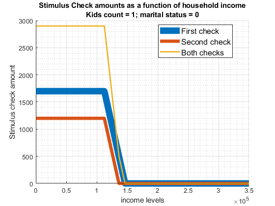
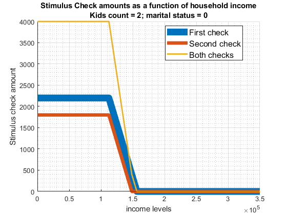

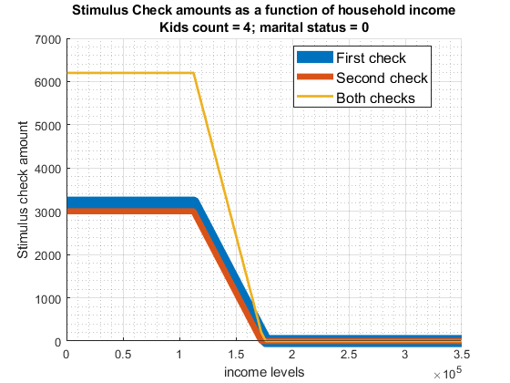
11.2.2 Trump Stimulus Checks for Married Households
Visualize stimulus check amounts.
bl_marital = 1;
for it_kids=0:1:4
snw_stimulus_checks(it_kids, bl_marital, ...
fl_stimulus_adult_first, fl_stimulus_child_first, ...
fl_stimulus_adult_second, fl_stimulus_child_second, ...
bl_visualize);
end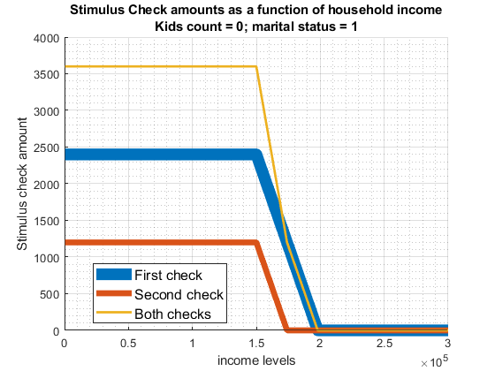
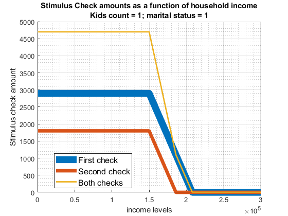
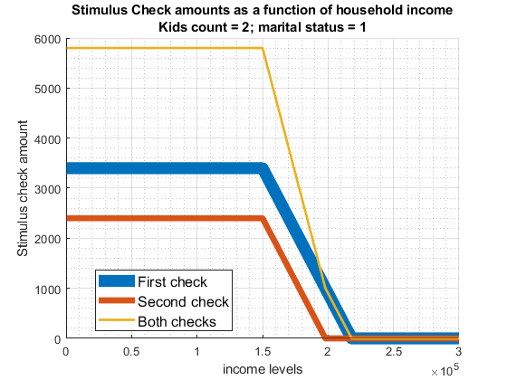
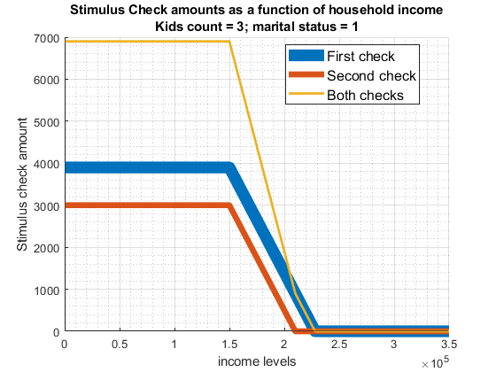

11.3 Existing Stimulus as a Function of Income and Family Status
Taking advantage of snw_stimulus_checks_biden from the PrjOptiSNW Package, this function presents stimulus checks at different income levels for households with different children count and martial status. This is for the Biden Stimulus under the American Rescue Plan Act.
11.3.1 Biden Stimulus Checks for Unmarried Households
Check base amount per adult and per child for the first and second rounds.
Visualize stimulus check amounts.
bl_visualize = true;
bl_marital = 0;
for it_kids=0:1:4
snw_stimulus_checks_biden(it_kids, bl_marital, bl_visualize);
end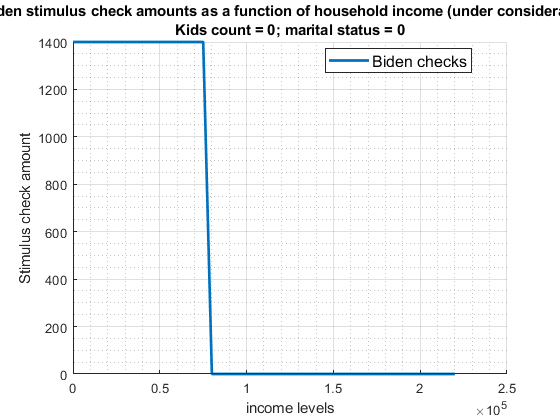
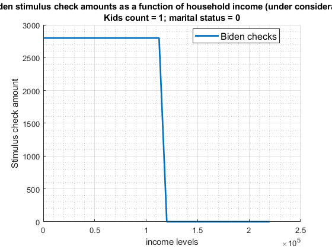


11.3.2 Biden Stimulus Checks for Married Households
Visualize stimulus check amounts.
bl_marital = 1;
for it_kids=0:1:4
snw_stimulus_checks_biden(it_kids, bl_marital, bl_visualize);
end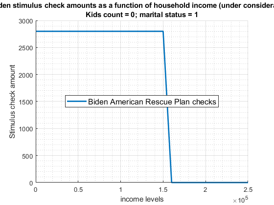

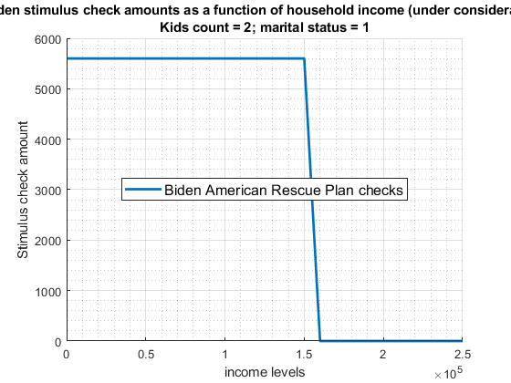
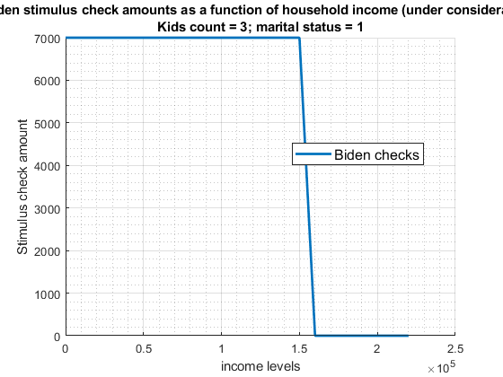

11.4 Taxable Income and Tax Liabilities in 2008
Taking advantage of snw_tax_liability from the PrjOptiSNW Package, the function solves for tax liability.
We can study the effects of the 2008 Tax Rebate. The Tax rebate is a rebate based on how much tax was paid, so we need to know taxable income and tax liability. These differ by income, household marital status, and the count of children. Given an array of pre-tax income values, we compute for from 0 to 4 kids and both married and unmarried taxable-income and tax-liability at all points along the income array. Deductions are from 2008 income (2008 IRS f1040). Tax brackets from 2008 are here (2008 IRS 1040tt).
11.4.1 Taxable Income and Tax Liabilities in 2008 for 4 Income Levels
Call the function at four income levels. Solve for different kids count and by marital status.
bl_visualize = true;
ar_income = [20000, 30000, 50000, 70000];
snw_tax_liability(ar_income, true);

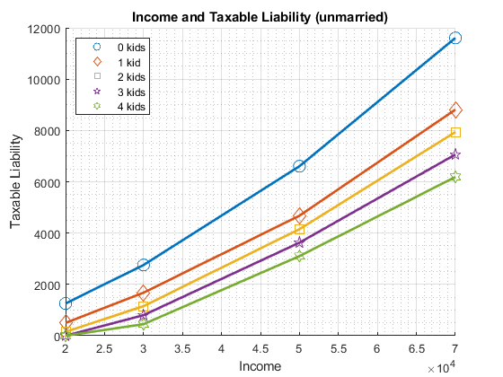
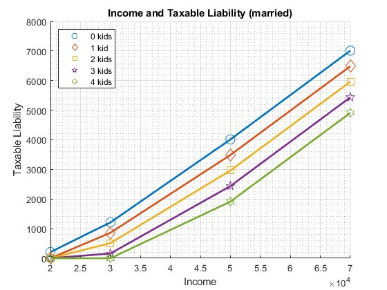
11.4.2 Taxable Income and Tax Liabilities in 2008 for 50 Income Levels
Call the function for incomes from 0 to 200k. Solve for different kids count and by marital status.
bl_visualize = true;
ar_income = linspace(0, 2e5, 50);
snw_tax_liability(ar_income, true);

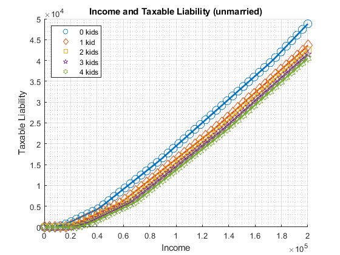

11.5 Bush 2008 Stimulus as a Function of Income and Family Status
Taking advantage of snw_stimulus_checks_bush from the PrjOptiSNW Package, this function presents stimulus checks at different income levels for households with different children count and martial status. The function considers the bush stimulus checks from the Economic Stimulus Act of 2008. IRS information provides information at the Economic Stimulus Payment Information Center.
Note that the Bush stimulus is a tax rebate, so we compute tax liability based on snw_tax_liability.
The Stimulus policy is expressed in the following formula, first four components (\(M\) is marital status, equals to 1 for married, 0 for unmarried, \(K\) is the number of kids, \(Y\) is pre-tax income) :
\(\displaystyle \textrm{MinChk}(M)=300\cdot \left(1+M\right)\)
\(\displaystyle \textrm{CappedRebate}(Y,K,M)=\min \Big(\textrm{TaxLiability}\left(Y,K,M\right),600\cdot \left(1+M\right)\Big)\)
\(\displaystyle \textrm{PhaseOut}(Y,M)=\max \Big(0,Y-75000\cdot (1+M)\Big)\cdot 0.05\)
\(\displaystyle \textrm{KidsChk}(K)=300\cdot K\)
Overall Tax-rebate Stimulus is:
\[\textrm{Bush08StimulusTaxRebate}=\max \left(\max \bigg(\textrm{MinChk}(M),\textrm{CappedRebate}(Y,K,M)\bigg)+\textrm{KidsChk}(K)-\textrm{PhaseOut}(Y,M),0\right)\]
11.5.1 Bush Stimulus Checks for Unmarried Households
Check base amount per adult and per child for the first and second rounds.
Visualize stimulus check amounts.
bl_visualize = true;
[fl_stimulus_adult, fl_stimulus_child] = deal(600, 300);
bl_marital = 0;
for it_kids=0:1:4
snw_stimulus_checks_bush(it_kids, bl_marital, fl_stimulus_adult, fl_stimulus_child, bl_visualize);
end
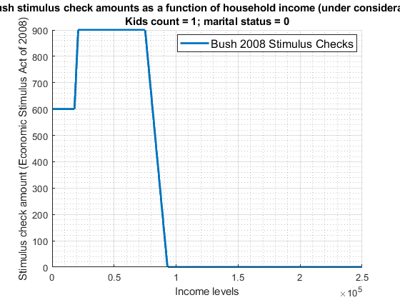


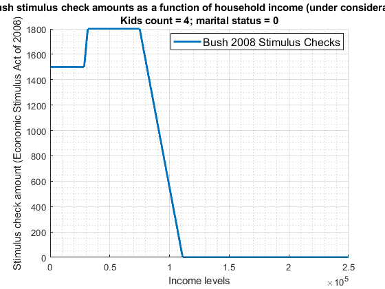
11.5.2 Bush Stimulus Checks for Married Households
Visualize stimulus check amounts.
[fl_stimulus_adult, fl_stimulus_child] = deal(600, 300);
bl_marital = 1;
for it_kids=0:1:4
snw_stimulus_checks_bush(it_kids, bl_marital, fl_stimulus_adult, fl_stimulus_child, bl_visualize);
end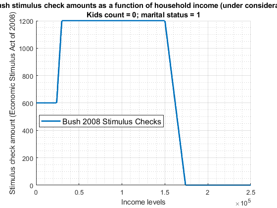